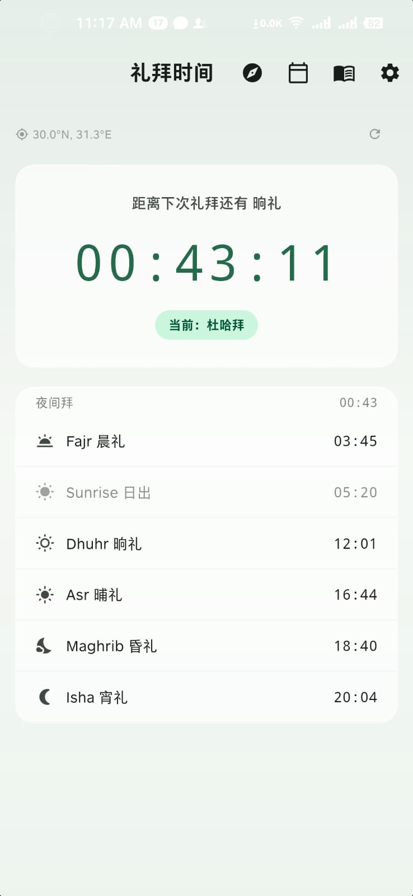
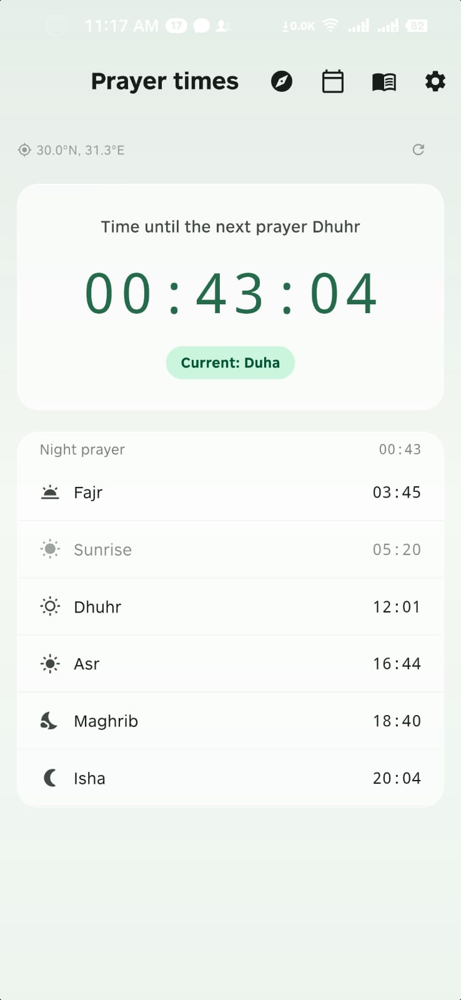
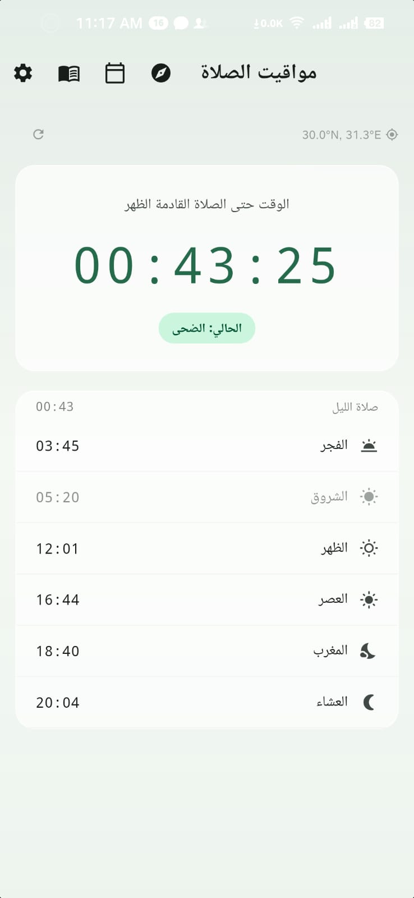

NoorWaqt Global · 全球礼拜
你并不是一个人在礼拜。拖动这颗地球，看礼拜的光沿着晨昏线一路扫过去——一座城市进入礼拜时间，它就亮起一束光。
此刻有 — 座城市正处在礼拜时间内
已点亮 0/152 座城市
拖动时间轴，或者按下播放——二十四小时里，礼拜的光会绕地球整整一圈。
—
统计范围为地图上的 152 座城市
搜索你所在的城市，或者让浏览器直接定位。所有时刻都在你的设备上算出来，不会上传到任何服务器。
🌙 —
随着太阳西移，一座城市接一座城市进入斋戒，又一座接一座开斋。你在这一头忍着渴，地球那一头有人刚刚咽下第一口水。
以乌姆库拉推算历为准。
开斋节不是全世界同一秒到来的。它从太平洋出发，一路向西点亮每一座城市——雅加达、达卡、开罗、伊斯坦布尔、伦敦、纽约。
—
市面上的礼拜应用几乎都默认使用者是男性。NoorWaqt 从第一行代码起就不是这样。
内置哈乃斐等多学派状态机，依据你自己记录的生理周期推演经期与病血，自动调度礼拜豁免、补拜与提醒——不用每个月再去翻一遍教法书。
免除礼拜不等于停下功修。这段时间应用自动切换到相应的赞念与祈祷模式，让每一天仍然有着落。
公历伊历双日历，独创的杜哈时间窗提醒，精准避开日出与日中两个受禁时刻。
每日的 Wird、每周的聚礼、每月的斋戒，一并纳入同一套节奏里。



经期、产后、病血、孕期——这些日子里的礼拜与斋戒，教法典籍上写得清楚，却很少有人整理成能直接查的样子。我们按问题写了七篇，每一处学派分歧都写成分歧，并注明经训依据。
生理记录是最私密的一类数据。NoorWaqt 的教法推演全部在设备本地完成，没有账号，没有云端同步，没有上传。
生理记录与教法推演不出设备，我们没有服务器可以存它。
7.3MB 古兰经包随应用打包，飞行模式下照样能用。
装上就能用，不留手机号，不留邮箱。
这张地图也是同样的做法：城市的礼拜时刻全部在你的浏览器里算出来，你的位置不会离开这台设备。